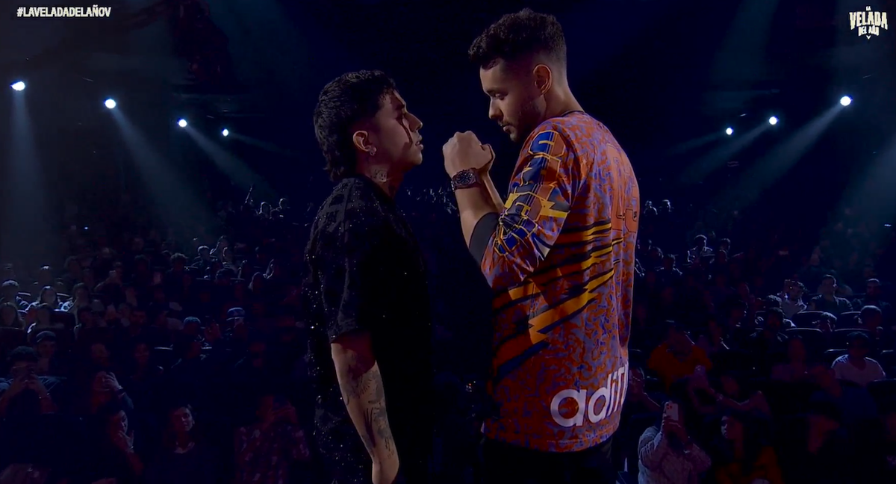

Barcelona a Cuartos de Final
El cuadro culé se clasifica a la siguiente etapa de la UEFA Champions League tras vencer 3-1 al Benfica en una nueva exhibición de Lamine Yamal y Raphinha.

El cuadro culé se clasifica a la siguiente etapa de la UEFA Champions League tras vencer 3-1 al Benfica en una nueva exhibición de Lamine Yamal y Raphinha.
La tercera semana del juicio contra el expresidente Álvaro Uribe empezó este martes con la continuación del testimonio de Luz Mireya López.

El reconocido streamer colombiano se enfrentará en la velada del año contra otro de los grandes.
La barranquillera sorprendió a todos sus seguidores contando que no solo esta casada sino que además acaba de tener una hija.